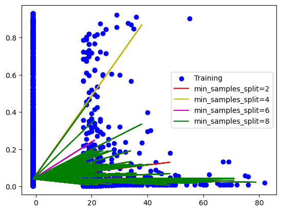
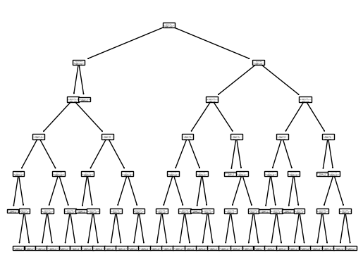
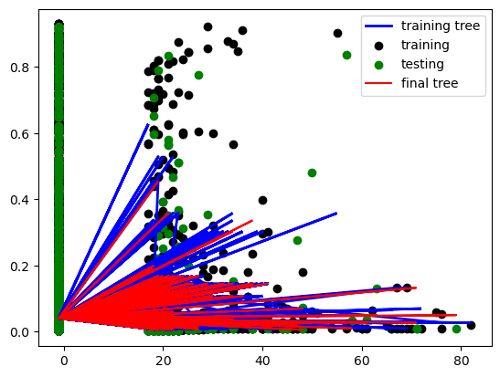
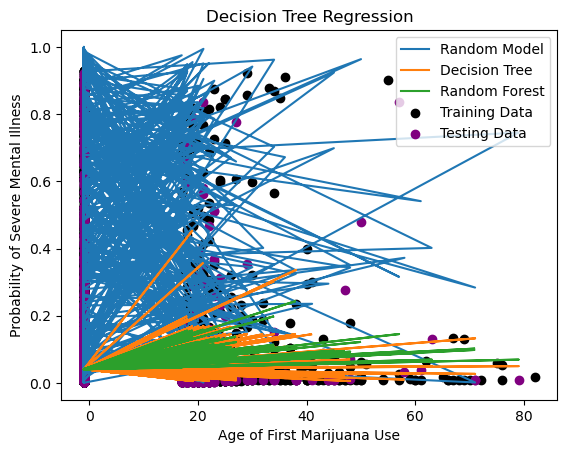

Code
import pandas as pd
import numpy as np
nsduh = pd.read_csv('../../../data/clean_data/nsduh_2021.csv')
nsduh = nsduh[['mjage', 'mjmfu', 'mjyrtot', 'mrbstway', 'mrdaypyr', 'mrdaypwk', 'MR30EST', 'smipppy']]As the next step of our analysis, we will be attempting to predict the smipppy, (Predicted Probability of Severe Mental Illness in the Past Year) using the NSDUH data. Our goal is to use data on cannabis use to predict the probability of severe mental illness.
In order to do this prediction task, we will use decision tree. First, we will use a simple decision tree as a baseline model for comparison. Next, we will use stochastic gradient boosting to improve the performance of our model. Finally, we will use a random forest model to see if we can improve our model further.
Before we begin the implementation of our models, we will give a brief technical overview of the methods we will be using.
A decision tree is a simple method for both classification and regression. Decision trees are non-parametric models that are very easy to implement, understand, and visualize. Decision tress are often chosen for their high interpretability, since they are easy to understand and provide transparency into how the model makes predictions.
Decision trees work by developing a sequential set of rules that are used to predict the target variable. For a numeric feature, a decision tree starts by looking at all the data and finding the optimal feature and split point to minimize the sum of squared errors. This means the data will be split into observations where the given feature value is less than the split point and observations where the given feature value is more than the split point. For a categorical feature, the decision tree will split the data into observations based on the categories of the feature, again using the sum of squared errors to find a split point. This process is repeated recursively, continually subdividing the nodes, until a stopping point is reached. When the stopping point is met, each leaf node will represent a numeric value derived as the average of the target variable for all the observations in that leaf node.
When implementing a decision tree, there are a few hyperparameters that can be tuned for better performance. The maximum depth of the tree can be tuned to find the optimal number of splits. The minimum number of samples required to split an internal node can also be tuned, preventing the tree from splitting nodes with too few observations. The metric used to measure the quality of a split can also be tuned, but we will use the default metric which is the sum of squared errors.
While fitting a single decision tree to the data is easy, fast, and highly interpretable, it has significant drawbacks. Decision trees are prone to overfitting, especially without tuning the hyperparameters or pruning. Decision trees are also unstable, meaning that small changes in the data can lead to large changes how the model is built and makes predictions. Decision trees also make highly local predictions since they work much like a large piecewise function, meaning they cannot extrapolate well to new data.
Random forest is an ensemble method that combines multiple decision trees into one model that performs better than an individual tree. Random forests are effective at combatting the weaknesses of single decision trees. They tend to have better performance and are less prone to overfitting. They are also more stable because predictions come from an ensemble of trees rather than one single tree.
Random forest work by first creating a data set sample from the original data set, with replacement. This new bootstrapped data set is the same size as the initial data set. Next, a decision tree is fit to the bootstrapped data set. However, at each node, a random subset of features is selected. Then, the tree is built in te same way as the normal decision tree, finding an optimal split point and minimizing the sum of squared errors. This process is repeated for many trees, each turning out different due to the bootstrapping and random feature selection. Finally, the predictions from each tree are averaged to get the final prediction, creating an ensemble learner.
When implementing a random forest, there are hyperparameters that can be tuned to improve performance. The number of predictors chosen at each split can be tuned. Typically, the best number is the square root of the total number of predictors. The same hyperparameters as the decision tree can also be tuned, such as the maximum depth of the tree and the minimum number of samples required to split an internal node.
Once again, we will be use the NSDUH data set from SAMSHA to employ substance usage data to predict mental health outcomes. Our target variable will be smipppy, which is the predicted probability of severe mental illness in the past year. Our predictor variables will be variables relating to cannabis usage.
# Replace all values equal to 999 with NaN
nsduh = nsduh.replace(9991, -1)
nsduh = nsduh.replace(991, -1)
nsduh = nsduh.replace(91, -1)
nsduh = nsduh.replace(9993, -2)
nsduh = nsduh.replace(993, -2)
nsduh = nsduh.replace(93, -2)
nsduh = nsduh.replace(9994, np.nan)
nsduh = nsduh.replace(994, np.nan)
nsduh = nsduh.replace(94, np.nan)
nsduh = nsduh.replace(9997, np.nan)
nsduh = nsduh.replace(997, np.nan)
nsduh = nsduh.replace(97, np.nan)
nsduh = nsduh.replace(9998, np.nan)
nsduh = nsduh.replace(998, np.nan)
nsduh = nsduh.replace(98, np.nan)
nsduh = nsduh.replace(9999, np.nan)
nsduh = nsduh.replace(999, np.nan)
nsduh = nsduh.replace(99, np.nan)
nsduh = nsduh.replace(9981, -1)
nsduh = nsduh.replace(981, -1)
nsduh = nsduh.replace(81, -1)
nsduh = nsduh.replace(9983, -2)
nsduh = nsduh.replace(983, -2)
nsduh = nsduh.replace(83, -2)
nsduh = nsduh.replace(9985, np.nan)
nsduh = nsduh.replace(985, np.nan)
nsduh = nsduh.replace(85, np.nan)
nsduh = nsduh.replace(9989, np.nan)
nsduh = nsduh.replace(989, np.nan)
nsduh = nsduh.replace(89, np.nan)
nsduh = nsduh.replace('9991', -1)
nsduh = nsduh.replace('991', -1)
nsduh = nsduh.replace('91', -1)
nsduh = nsduh.replace('9993', -2)
nsduh = nsduh.replace('993', -2)
nsduh = nsduh.replace('93', -2)
nsduh = nsduh.replace('9994', np.nan)
nsduh = nsduh.replace('994', np.nan)
nsduh = nsduh.replace('94', np.nan)
nsduh = nsduh.replace('9997', np.nan)
nsduh = nsduh.replace('997', np.nan)
nsduh = nsduh.replace('97', np.nan)
nsduh = nsduh.replace('9998', np.nan)
nsduh = nsduh.replace('998', np.nan)
nsduh = nsduh.replace('98', np.nan)
nsduh = nsduh.replace('9999', np.nan)
nsduh = nsduh.replace('999', np.nan)
nsduh = nsduh.replace('99', np.nan)
nsduh = nsduh.replace('9981', -1)
nsduh = nsduh.replace('981', -1)
nsduh = nsduh.replace('81', -1)
nsduh = nsduh.replace('9983', -2)
nsduh = nsduh.replace('983', -2)
nsduh = nsduh.replace('83', -2)
nsduh = nsduh.replace('9985', np.nan)
nsduh = nsduh.replace('985', np.nan)
nsduh = nsduh.replace('85', np.nan)
nsduh = nsduh.replace('9989', np.nan)
nsduh = nsduh.replace('989', np.nan)
nsduh = nsduh.replace('89', np.nan)
nsduh = nsduh.replace('Never Used', -1)# combine mrdaypyr and mrdaypwk into one column
nsduh['mrdaypyr'] = nsduh['mrdaypyr'].fillna(0)
nsduh['mrdaypwk'] = nsduh['mrdaypwk'].fillna(0)
# if value is positive, multiply by 52 to get yearly value
nsduh['days_per_year'] = nsduh['mrdaypwk'].apply(lambda x: int(x) * 52 if int(x) > 0 else x)
# mutate mrdaypyr and mrdaypwk to be numeric
nsduh['mrdaypyr'] = pd.to_numeric(nsduh['mrdaypyr'], errors='coerce')
nsduh['mrdaypwk'] = pd.to_numeric(nsduh['mrdaypwk'], errors='coerce')
nsduh['MR30EST'] = pd.to_numeric(nsduh['MR30EST'], errors='coerce')
# if mrdaypyr is positive, add to days_per_year
nsduh['days_per_year'] = np.where(nsduh['mrdaypyr'] > 0, nsduh['days_per_year'] + nsduh['mrdaypyr'], nsduh['days_per_year'])
nsduh['days_per_year'] = np.where(nsduh['MR30EST'] > 0, nsduh['MR30EST'] * 12, nsduh['days_per_year'])
nsduh = nsduh.drop(['mrdaypyr', 'mrdaypwk', 'MR30EST'], axis=1)
nsduh| mjage | mjmfu | mjyrtot | mrbstway | smipppy | days_per_year | |
|---|---|---|---|---|---|---|
| 0 | 19 | NaN | 52 | 1 | 0.008998 | 52.0 |
| 1 | -1 | -1 | -1 | -1 | 0.008998 | -1.0 |
| 2 | -1 | -1 | -1 | -1 | 0.028021 | -1.0 |
| 3 | 13 | NaN | 364 | 1 | 0.071654 | 364.0 |
| 4 | -1 | -1 | -1 | -1 | 0.004786 | -1.0 |
| ... | ... | ... | ... | ... | ... | ... |
| 58029 | 21 | NaN | -2 | -2 | 0.008998 | -2.0 |
| 58030 | 25 | NaN | -2 | -2 | 0.040617 | -2.0 |
| 58031 | 18 | NaN | 48 | 2 | 0.003488 | 0.0 |
| 58032 | 19 | NaN | 3 | 3 | 0.008998 | 3.0 |
| 58033 | -1 | -1 | -1 | -1 | 0.003488 | -1.0 |
58034 rows × 6 columns
mjage object
mjmfu object
mjyrtot object
mrbstway object
smipppy float64
days_per_year float64
dtype: objectNow that we have given a brief overview of the methods we will be using and loaded in our data, we can begin implementing our models.
We’ll start by splitting our into training and testing sets. We will use 80% of the data for training and 20% for testing. We will also set a random seed so that our results are reproducible.
Our baseline model will be entirely random numeric predictions. We will use the root mean squared error to evaluate the performance of our baseline model.
# Evaluate the random model
from sklearn.metrics import mean_squared_error
from sklearn.metrics import mean_absolute_error
from sklearn.metrics import r2_score
rand_mse = mean_squared_error(test_labels, rand_pred)
rand_rmse = np.sqrt(rand_mse)
print('Random RMSE: ', rand_rmse)
rand_mae = mean_absolute_error(test_labels, rand_pred)
print('Random MAE: ', rand_mae)
rand_r2 = r2_score(test_labels, rand_pred)
print('Random R2: ', rand_r2)Random RMSE: 0.5527905917092234
Random MAE: 0.47304614099131814
Random R2: -19.30031772945689Next, we will use a normal decision tree. We expect this model to perform only moderately well, but it will give us a reference to compare our more advanced models to. We will tune for the maximum depth of the tree and the minimum number of samples required to split an internal node.
from sklearn.tree import DecisionTreeRegressor
from sklearn.tree import plot_tree
# Tune hyperparameters
results = {}
for max_depth in range(5, 15):
for min_samples_split in range(2, 10):
decision_tree = DecisionTreeRegressor(random_state=371, max_depth=max_depth, min_samples_split=min_samples_split)
decision_tree.fit(train_features, train_labels)
decision_tree_pred = decision_tree.predict(test_features)
decision_tree_mse = mean_squared_error(test_labels, decision_tree_pred)
decision_tree_rmse = np.sqrt(decision_tree_mse)
decision_tree_mae = mean_absolute_error(test_labels, decision_tree_pred)
decision_tree_r2 = r2_score(test_labels, decision_tree_pred)
results[(max_depth, min_samples_split)] = decision_tree_rmse, decision_tree_mae, decision_tree_r2, decision_tree, decision_tree_predfrom matplotlib import pyplot as plt
plt.figure()
plt.scatter(train_features['mjage'], train_labels, c='b', label='Training')
plt.plot(test_features['mjage'], results[(5, 2)][4], c='r', label='min_samples_split=2')
plt.plot(test_features['mjage'], results[(5, 4)][4], c='y', label='min_samples_split=4')
plt.plot(test_features['mjage'], results[(5, 6)][4], c='m', label='min_samples_split=6')
plt.plot(test_features['mjage'], results[(5, 8)][4], c='g', label='min_samples_split=8')
plt.legend()
plt.show()
results_df = pd.DataFrame(results).T.reset_index()
results_df.columns = ['max_depth', 'min_samples_split', 'rmse', 'mae', 'r2', 'model', 'pred']
results_df.sort_values('rmse', ascending=True)
best_max_depth = results_df.sort_values('rmse', ascending=True).iloc[0]['max_depth']
best_max_depth = int(best_max_depth)
best_min_samples_split = results_df.sort_values('rmse', ascending=True).iloc[0]['min_samples_split']
best_min_samples_split = int(best_min_samples_split)decision_tree = DecisionTreeRegressor(random_state=371, max_depth=best_max_depth, min_samples_split=best_min_samples_split)
decision_tree.fit(train_features, train_labels)
decision_tree_pred = decision_tree.predict(test_features)
decision_tree_mse = mean_squared_error(test_labels, decision_tree_pred)
decision_tree_rmse = np.sqrt(decision_tree_mse)
print('Decision Tree RMSE: ', decision_tree_rmse)
decision_tree_mae = mean_absolute_error(test_labels, decision_tree_pred)
print('Decision Tree MAE: ', decision_tree_mae)
decision_tree_r2 = r2_score(test_labels, decision_tree_pred)
print('Decision Tree R2: ', decision_tree_r2)
plot_tree(decision_tree)Decision Tree RMSE: 0.12205319291140562
Decision Tree MAE: 0.05658890114799911
Decision Tree R2: 0.01035407758738438[Text(0.46209016393442626, 0.9285714285714286, 'x[1] <= 2.5\nsquared_error = 0.015\nsamples = 19175\nvalue = 0.043'),
Text(0.20491803278688525, 0.7857142857142857, 'x[2] <= 234.0\nsquared_error = 0.014\nsamples = 18610\nvalue = 0.041'),
Text(0.1885245901639344, 0.6428571428571429, 'x[2] <= 2.5\nsquared_error = 0.014\nsamples = 18605\nvalue = 0.041'),
Text(0.09016393442622951, 0.5, 'x[2] <= -1.5\nsquared_error = 0.014\nsamples = 18555\nvalue = 0.041'),
Text(0.03278688524590164, 0.35714285714285715, 'x[0] <= 18.5\nsquared_error = 0.0\nsamples = 16\nvalue = 0.012'),
Text(0.01639344262295082, 0.21428571428571427, 'squared_error = 0.0\nsamples = 4\nvalue = 0.022'),
Text(0.04918032786885246, 0.21428571428571427, 'x[1] <= 1.5\nsquared_error = 0.0\nsamples = 12\nvalue = 0.009'),
Text(0.03278688524590164, 0.07142857142857142, 'squared_error = 0.0\nsamples = 4\nvalue = 0.006'),
Text(0.06557377049180328, 0.07142857142857142, 'squared_error = 0.0\nsamples = 8\nvalue = 0.01'),
Text(0.14754098360655737, 0.35714285714285715, 'x[0] <= 21.5\nsquared_error = 0.014\nsamples = 18539\nvalue = 0.041'),
Text(0.11475409836065574, 0.21428571428571427, 'x[1] <= 1.5\nsquared_error = 0.014\nsamples = 18526\nvalue = 0.041'),
Text(0.09836065573770492, 0.07142857142857142, 'squared_error = 0.014\nsamples = 18522\nvalue = 0.041'),
Text(0.13114754098360656, 0.07142857142857142, 'squared_error = 0.011\nsamples = 4\nvalue = 0.136'),
Text(0.18032786885245902, 0.21428571428571427, 'x[0] <= 32.5\nsquared_error = 0.001\nsamples = 13\nvalue = 0.023'),
Text(0.16393442622950818, 0.07142857142857142, 'squared_error = 0.0\nsamples = 10\nvalue = 0.015'),
Text(0.19672131147540983, 0.07142857142857142, 'squared_error = 0.003\nsamples = 3\nvalue = 0.05'),
Text(0.28688524590163933, 0.5, 'x[0] <= 19.5\nsquared_error = 0.026\nsamples = 50\nvalue = 0.081'),
Text(0.22950819672131148, 0.35714285714285715, 'x[2] <= 3.5\nsquared_error = 0.051\nsamples = 21\nvalue = 0.139'),
Text(0.21311475409836064, 0.21428571428571427, 'squared_error = 0.094\nsamples = 3\nvalue = 0.455'),
Text(0.2459016393442623, 0.21428571428571427, 'x[4] <= 54.0\nsquared_error = 0.025\nsamples = 18\nvalue = 0.086'),
Text(0.22950819672131148, 0.07142857142857142, 'squared_error = 0.013\nsamples = 15\nvalue = 0.064'),
Text(0.26229508196721313, 0.07142857142857142, 'squared_error = 0.067\nsamples = 3\nvalue = 0.199'),
Text(0.3442622950819672, 0.35714285714285715, 'x[4] <= 3.5\nsquared_error = 0.004\nsamples = 29\nvalue = 0.038'),
Text(0.3114754098360656, 0.21428571428571427, 'x[2] <= 18.0\nsquared_error = 0.007\nsamples = 14\nvalue = 0.066'),
Text(0.29508196721311475, 0.07142857142857142, 'squared_error = 0.003\nsamples = 11\nvalue = 0.048'),
Text(0.32786885245901637, 0.07142857142857142, 'squared_error = 0.015\nsamples = 3\nvalue = 0.132'),
Text(0.3770491803278688, 0.21428571428571427, 'x[0] <= 44.0\nsquared_error = 0.0\nsamples = 15\nvalue = 0.013'),
Text(0.36065573770491804, 0.07142857142857142, 'squared_error = 0.0\nsamples = 11\nvalue = 0.008'),
Text(0.39344262295081966, 0.07142857142857142, 'squared_error = 0.001\nsamples = 4\nvalue = 0.026'),
Text(0.22131147540983606, 0.6428571428571429, 'squared_error = 0.155\nsamples = 5\nvalue = 0.336'),
Text(0.7192622950819673, 0.7857142857142857, 'x[4] <= 5.5\nsquared_error = 0.043\nsamples = 565\nvalue = 0.111'),
Text(0.5860655737704918, 0.6428571428571429, 'x[0] <= 41.5\nsquared_error = 0.037\nsamples = 429\nvalue = 0.1'),
Text(0.5163934426229508, 0.5, 'x[2] <= 37.0\nsquared_error = 0.04\nsamples = 394\nvalue = 0.107'),
Text(0.47540983606557374, 0.35714285714285715, 'x[2] <= 2.5\nsquared_error = 0.037\nsamples = 366\nvalue = 0.101'),
Text(0.4426229508196721, 0.21428571428571427, 'x[0] <= 23.5\nsquared_error = 0.044\nsamples = 226\nvalue = 0.12'),
Text(0.4262295081967213, 0.07142857142857142, 'squared_error = 0.039\nsamples = 157\nvalue = 0.109'),
Text(0.45901639344262296, 0.07142857142857142, 'squared_error = 0.055\nsamples = 69\nvalue = 0.145'),
Text(0.5081967213114754, 0.21428571428571427, 'x[0] <= 22.5\nsquared_error = 0.023\nsamples = 140\nvalue = 0.072'),
Text(0.4918032786885246, 0.07142857142857142, 'squared_error = 0.018\nsamples = 105\nvalue = 0.06'),
Text(0.5245901639344263, 0.07142857142857142, 'squared_error = 0.037\nsamples = 35\nvalue = 0.108'),
Text(0.5573770491803278, 0.35714285714285715, 'x[2] <= 41.5\nsquared_error = 0.072\nsamples = 28\nvalue = 0.177'),
Text(0.5409836065573771, 0.21428571428571427, 'squared_error = 0.02\nsamples = 3\nvalue = 0.528'),
Text(0.5737704918032787, 0.21428571428571427, 'x[0] <= 19.5\nsquared_error = 0.062\nsamples = 25\nvalue = 0.134'),
Text(0.5573770491803278, 0.07142857142857142, 'squared_error = 0.087\nsamples = 16\nvalue = 0.189'),
Text(0.5901639344262295, 0.07142857142857142, 'squared_error = 0.003\nsamples = 9\nvalue = 0.037'),
Text(0.6557377049180327, 0.5, 'x[1] <= 3.5\nsquared_error = 0.001\nsamples = 35\nvalue = 0.028'),
Text(0.639344262295082, 0.35714285714285715, 'squared_error = 0.004\nsamples = 2\nvalue = 0.07'),
Text(0.6721311475409836, 0.35714285714285715, 'x[2] <= 1.5\nsquared_error = 0.001\nsamples = 33\nvalue = 0.026'),
Text(0.639344262295082, 0.21428571428571427, 'x[1] <= 10.5\nsquared_error = 0.002\nsamples = 17\nvalue = 0.034'),
Text(0.6229508196721312, 0.07142857142857142, 'squared_error = 0.001\nsamples = 14\nvalue = 0.027'),
Text(0.6557377049180327, 0.07142857142857142, 'squared_error = 0.006\nsamples = 3\nvalue = 0.066'),
Text(0.7049180327868853, 0.21428571428571427, 'x[0] <= 55.0\nsquared_error = 0.0\nsamples = 16\nvalue = 0.017'),
Text(0.6885245901639344, 0.07142857142857142, 'squared_error = 0.0\nsamples = 12\nvalue = 0.019'),
Text(0.7213114754098361, 0.07142857142857142, 'squared_error = 0.0\nsamples = 4\nvalue = 0.01'),
Text(0.8524590163934426, 0.6428571428571429, 'x[0] <= 18.5\nsquared_error = 0.059\nsamples = 136\nvalue = 0.146'),
Text(0.7868852459016393, 0.5, 'x[0] <= 17.5\nsquared_error = 0.02\nsamples = 40\nvalue = 0.055'),
Text(0.7540983606557377, 0.35714285714285715, 'x[1] <= 7.5\nsquared_error = 0.043\nsamples = 15\nvalue = 0.112'),
Text(0.7377049180327869, 0.21428571428571427, 'squared_error = 0.002\nsamples = 7\nvalue = 0.035'),
Text(0.7704918032786885, 0.21428571428571427, 'x[1] <= 8.5\nsquared_error = 0.069\nsamples = 8\nvalue = 0.179'),
Text(0.7540983606557377, 0.07142857142857142, 'squared_error = 0.003\nsamples = 2\nvalue = 0.627'),
Text(0.7868852459016393, 0.07142857142857142, 'squared_error = 0.001\nsamples = 6\nvalue = 0.029'),
Text(0.819672131147541, 0.35714285714285715, 'x[4] <= 7.0\nsquared_error = 0.003\nsamples = 25\nvalue = 0.021'),
Text(0.8032786885245902, 0.21428571428571427, 'squared_error = 0.02\nsamples = 2\nvalue = 0.144'),
Text(0.8360655737704918, 0.21428571428571427, 'x[4] <= 8.5\nsquared_error = 0.0\nsamples = 23\nvalue = 0.011'),
Text(0.819672131147541, 0.07142857142857142, 'squared_error = 0.0\nsamples = 1\nvalue = 0.062'),
Text(0.8524590163934426, 0.07142857142857142, 'squared_error = 0.0\nsamples = 22\nvalue = 0.008'),
Text(0.9180327868852459, 0.5, 'x[4] <= 6.5\nsquared_error = 0.071\nsamples = 96\nvalue = 0.184'),
Text(0.9016393442622951, 0.35714285714285715, 'squared_error = 0.089\nsamples = 6\nvalue = 0.358'),
Text(0.9344262295081968, 0.35714285714285715, 'x[0] <= 40.5\nsquared_error = 0.067\nsamples = 90\nvalue = 0.172'),
Text(0.9016393442622951, 0.21428571428571427, 'x[0] <= 28.5\nsquared_error = 0.074\nsamples = 78\nvalue = 0.192'),
Text(0.8852459016393442, 0.07142857142857142, 'squared_error = 0.055\nsamples = 64\nvalue = 0.168'),
Text(0.9180327868852459, 0.07142857142857142, 'squared_error = 0.148\nsamples = 14\nvalue = 0.303'),
Text(0.9672131147540983, 0.21428571428571427, 'x[0] <= 66.5\nsquared_error = 0.002\nsamples = 12\nvalue = 0.044'),
Text(0.9508196721311475, 0.07142857142857142, 'squared_error = 0.001\nsamples = 10\nvalue = 0.026'),
Text(0.9836065573770492, 0.07142857142857142, 'squared_error = 0.0\nsamples = 2\nvalue = 0.133')]
plt.figure()
plt.plot(train_features['mjage'], decision_tree.predict(train_features), color="b", label="training tree", linewidth=2)
plt.scatter(train_features['mjage'], train_labels, c='k', label='training')
plt.scatter(test_features['mjage'], test_labels, c='g', label='testing')
plt.plot(test_features['mjage'], decision_tree_pred, c='r', label='final tree')
plt.legend()
plt.show()
Finally, we will use a random forest model. We expect this model to perform better than our decision tree model.
from sklearn.ensemble import RandomForestRegressor
from tqdm import tqdm
# Tune hyperparameters
results_rf = {}
for n_estimators in tqdm(range(100, 1000, 100)):
for max_depth in tqdm(range(1, 15)):
random_forest = RandomForestRegressor(random_state=371, n_estimators=n_estimators, max_depth=max_depth)
random_forest.fit(train_features, train_labels)
random_forest_pred = random_forest.predict(test_features)
random_forest_mse = mean_squared_error(test_labels, random_forest_pred)
random_forest_rmse = np.sqrt(random_forest_mse)
random_forest_mae = mean_absolute_error(test_labels, random_forest_pred)
random_forest_r2 = r2_score(test_labels, random_forest_pred)
results_rf[(n_estimators, max_depth, min_samples_split)] = random_forest_rmse, random_forest_mae, random_forest_r2, random_forest, random_forest_pred 0%| | 0/9 [00:00<?, ?it/s]
0%| | 0/14 [00:00<?, ?it/s]100%|██████████| 14/14 [00:05<00:00, 2.70it/s]
100%|██████████| 14/14 [00:10<00:00, 1.32it/s]
100%|██████████| 14/14 [00:16<00:00, 1.17s/it]
100%|██████████| 14/14 [00:21<00:00, 1.56s/it]
100%|██████████| 14/14 [00:26<00:00, 1.92s/it]
100%|██████████| 14/14 [00:32<00:00, 2.33s/it]
100%|██████████| 14/14 [00:37<00:00, 2.69s/it]
100%|██████████| 14/14 [00:42<00:00, 3.06s/it]
100%|██████████| 14/14 [00:47<00:00, 3.38s/it]
100%|██████████| 9/9 [04:01<00:00, 26.81s/it]results_rf_df = pd.DataFrame(results_rf).T.reset_index()
results_rf_df.columns = ['n_estimators', 'max_depth', 'min_samples_split', 'rmse', 'mae', 'r2', 'model', 'pred']
results_rf_df.sort_values('rmse', ascending=True)
best_n_estimators = results_rf_df.sort_values('rmse', ascending=True).iloc[0]['n_estimators']
best_n_estimators = int(best_n_estimators)
best_max_depth = results_rf_df.sort_values('rmse', ascending=True).iloc[0]['max_depth']
best_max_depth = int(best_max_depth)
best_min_samples_split = results_rf_df.sort_values('rmse', ascending=True).iloc[0]['min_samples_split']
best_min_samples_split = int(best_min_samples_split)random_forest = RandomForestRegressor(random_state=371, n_estimators=best_n_estimators, max_depth=best_max_depth, min_samples_split=best_min_samples_split)
random_forest.fit(train_features, train_labels)
random_forest_pred = random_forest.predict(test_features)
random_forest_mse = mean_squared_error(test_labels, random_forest_pred)
random_forest_rmse = np.sqrt(random_forest_mse)
print('Random Forest RMSE: ', random_forest_rmse)
random_forest_mae = mean_absolute_error(test_labels, random_forest_pred)
print('Random Forest MAE: ', random_forest_mae)
random_forest_r2 = r2_score(test_labels, random_forest_pred)
print('Random Forest R2: ', random_forest_r2)Random Forest RMSE: 0.12227463208386215
Random Forest MAE: 0.056880422372448634
Random Forest R2: 0.006759822234491675from matplotlib import pyplot as plt
plt.figure()
plt.plot(test_features['mjage'], rand_pred, label='Random Model')
plt.plot(test_features['mjage'], decision_tree_pred, label='Decision Tree')
plt.plot(test_features['mjage'], random_forest_pred, label='Random Forest')
plt.scatter(train_features['mjage'], train_labels, label='Training Data', color='k')
plt.scatter(test_features['mjage'], test_labels, label='Testing Data', color='purple')
plt.xlabel('Age of First Marijuana Use')
plt.ylabel('Probability of Severe Mental Illness')
plt.title('Decision Tree Regression')
plt.legend()
plt.show()
| Model | RMSE | MAE | R2 |
|---|---|---|---|
| Random Baseline | 0.5528 | 0.4730 | -19.3003 |
| Decision Tree | 0.1221 | 0.0566 | 0.0104 |
| Random Forest | 0.1221 | 0.0568 | 0.009 |
We can see from our final results that the baseline model performed the worst of all the models. This is expected since the baseline model is just random predictions. The baseline model has a root mean squared error of 0.5528, a mean absolute error of 0.4730, and an R2 score of -19.3003. Since our outcome value is a probability, the root mean squared error and mean absolute error are both quite large, equally almost 50% of the outcome value. All these metrics indicate that the baseline model is not a good model.
The single decision tree model performs suprisingly well, netting a root mean squared error of 0.1221, a mean absolute error of 0.0566, and an R2 score of 0.0104. This is a significant improvement over the baseline model. The root mean squared error and mean absolute error are about a quarter of the size of those for the baseline model, indicating improved performance. These error values indicate that the decision tree model is a good model. However, the R2 score is very close to 0, indicating that the model is not very good at predicting the outcome. This is not surprising since decision trees are better at classification than regression.
Finally, we see that the random forest model performs about the same as the single decision tree model. The random forest model has a root mean squared error of 0.1221, a mean absolute error of 0.0568, and an R2 score of 0.009. The metrics for the random forest are actually slightly worse than those for the single decision tree. This is somewhat surprising since we tuned this model, but it is likely due to the fact that our data is not a strong predictor of the outcome.
Overall, we get a good model from the single decision tree. However, the random forest model does not improve on the single decision tree model. This is likely due to the fact that our data is not a strong predictor of the outcome. This indicates that in this dataset, cannabis usage is not a strong predictor of predicted probability of severe mental illness. This is a surprising result, since we expected cannabis usage to be a strong predictor of mental illness. However, part of this result may be due to the fact that we do not have direct mental illness data. Instead, we have a predicted probability of mental illness, which is a proxy for mental illness. This may be why our models do not perform as well as we expected.